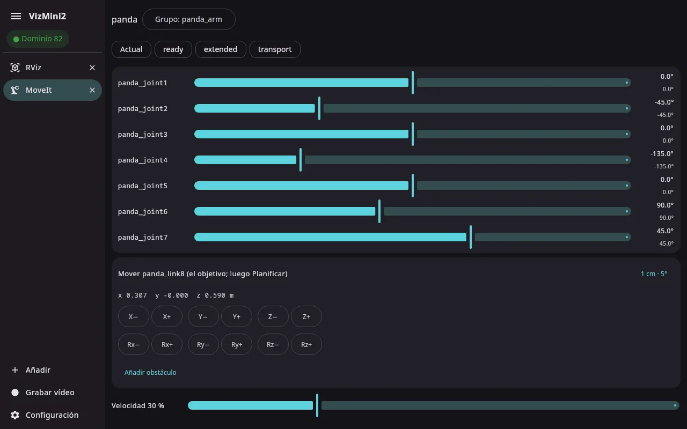

Mover un brazo con MoveIt
Objetivo: planificar y ejecutar movimientos de un brazo robótico desde el móvil o el PC, como con el panel MotionPlanning de RViz. Un cuarto de hora con la demo del Panda de MoveIt en un PC.

En un PC con ROS 2, arranca la demo del Panda (
sudo apt install ros-$ROS_DISTRO-moveit-resources-panda-moveit-configsi no la tienes):ros2 launch moveit_resources_panda_moveit_config demo.launch.py
Cualquier robot con
move_groupfunciona igual; puedes cerrar RViz, no hace falta.En VizMini2, conéctate al mismo dominio (Conectar con tu robot) y añade una pestaña MoveIt con + (o el dashboard ya montado Manipulación (MoveIt), que trae además una vista 3D con la trayectoria planificada). Lee el robot y sus grupos de planificación de
move_group; elige panda_arm en Grupo.Pulsa la pose con nombre ready o extended: los sliders van al objetivo. Pulsa Planificar: la línea de estado dice cuánto dura el movimiento y, con un display Trajectory en una pestaña RViz, un brazo fantasma lo reproduce. Luego Ejecutar (o Planificar y ejecutar de una vez).
Mueve una sola articulación con su slider, o la pinza con los botones X± Y± Z± y Rx± Ry± Rz± (MoveIt calcula las articulaciones; el paso se ve a la derecha), y vuelve a planificar. Velocidad escala el movimiento.
Marca En línea recta para llevar la pinza por una trayectoria cartesiana recta; si solo se puede una parte, la app dice cuánta.
Pulsa Añadir obstáculo: aparece una caja entre la pinza y el objetivo, y el siguiente plan la esquiva (un display Planning scene la enseña en 3D). Quitar obstáculos las quita.
Parar cancela el movimiento en cualquier momento.
En Más opciones… eliges el planificador (OMPL, Pilz, CHOMP: lo que ofrezca move_group), el
tiempo de planificación, el namespace de move_group y la versión de los mensajes de MoveIt (se
detecta sola). La pestaña se explica en MoveIt.
Siguiente: la misma demo usa ros2_control, así que también puedes probar Cambiar y mandar controladores de ros2_control.